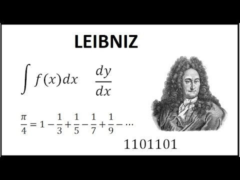
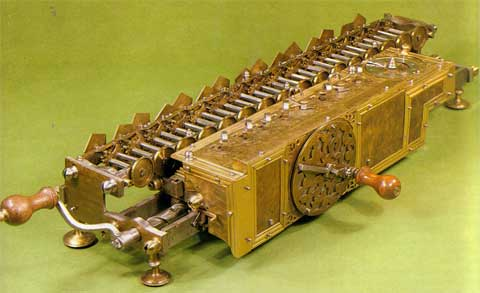

Gottfried Wilhelm Leibniz nació el 1 de julio de 1646 en Leipzig, Alemania. Fue hijo de Friedrich Leibniz, profesor de filosofía moral en la Universidad de Leipzig, y Catharina Schmuck. Desde pequeño mostró una gran inteligencia y curiosidad; aprendió latín por su cuenta y a muy temprana edad comenzó a estudiar textos de filosofía y lógica en la biblioteca de su padre.
Estudió en la Universidad de Leipzig, donde se formó en filosofía y derecho, y más tarde obtuvo el grado de doctor en Derecho en la Universidad de Altdorf en 1666. A lo largo de su vida trabajó como filósofo, matemático, jurista, diplomático e historiador, destacándose como uno de los pensadores más importantes del siglo XVII.
Entre sus mayores logros se encuentra el desarrollo del cálculo diferencial e integral, de manera independiente a Isaac Newton. Además, introdujo la notación matemática que aún se utiliza hoy en el cálculo, como el símbolo ∫ para la integral. También hizo importantes aportaciones a la lógica, la metafísica y la filosofía racionalista. Es conocido por su teoría de las mónadas, donde explicaba que la realidad está compuesta por sustancias simples e indivisibles.
Leibniz también realizó aportaciones en el campo de la tecnología, ya que perfeccionó una máquina calculadora mecánica capaz de realizar multiplicaciones y divisiones. En filosofía, defendió la idea de que vivimos en “el mejor de los mundos posibles”, una de sus frases más conocidas.
Falleció el 14 de noviembre de 1716 en Hannover, Alemania. A pesar de que en su tiempo no recibió todo el reconocimiento que merecía, hoy es considerado uno de los grandes genios universales y una figura fundamental en la historia de las matemáticas y la filosofía.